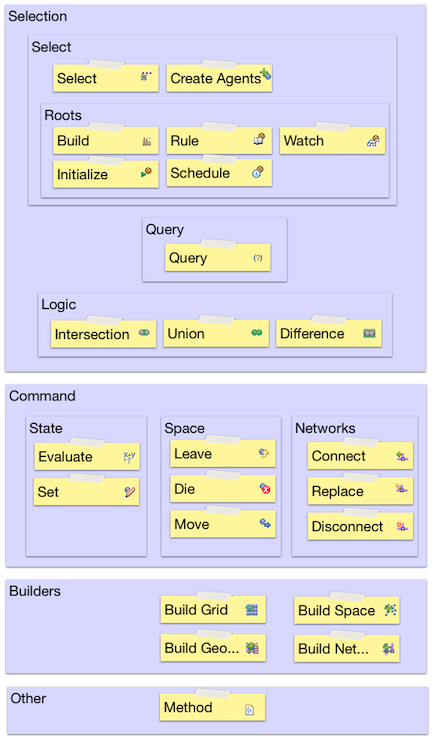

Before getting into the details of how each Action works, we need to understand how they all fit together. As discussed above, actions are strung together in a sequence. They're always composed of two parts, though those parts can be assembled and intermixed in many different ways. First, we search for a collection of agents, and then we do something with that selection. We refer to these two parts as Selections and Commands. There are two special kinds of selections. First, we need some way to start the whole chain of actions off, and so we have a kind of Selection called a Root Selection, or simply a Root. Secondly, we need some way to actually make the agents exist in the model in the first place, so we have a Create Agents action. For the technically minded, another useful way of looking at the Actions approach is as a Query Transformation language, as with SQL and Stored Procedures. Except again, the results of the queries along with the transformations flow through from one query to the next.
There are two other special categories of actions. One we use to crate the spaces that agents exist upon. We call these Builders. The other category contains just one member, "Method".
These are all summarized in the diagram below.
